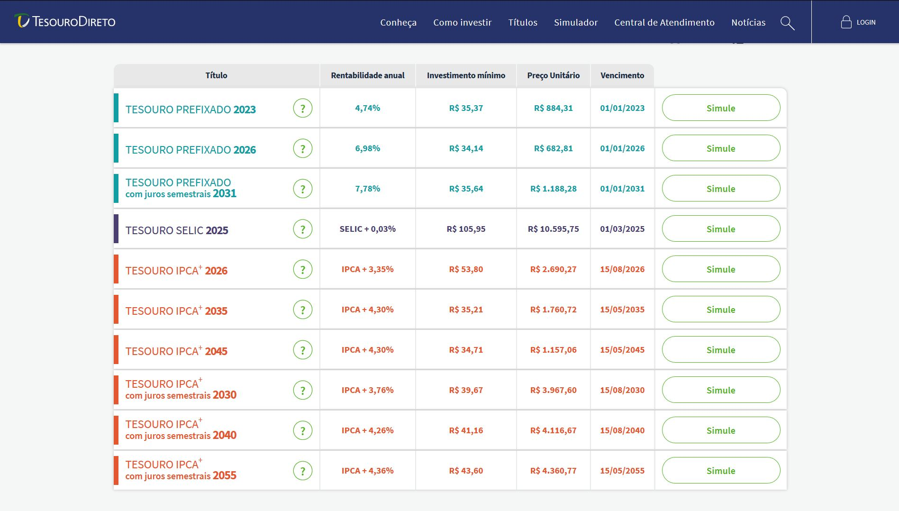

Webscraping e visualização Interativa da ETTJ [Python] e [R]
Gosto muito deste pequeno trabalho porque ele conecta diferentes ferramentas e assuntos técnicos que eu julgo interessante para todos que trabalham com dados.
- Primeiro, temos o webscraping que automatiza a coleta, leitura e o tratamento dos dados com
Python. - Segundo, temos a comunicação de um conceito complexo de forma intuitiva, através da criação de um gif com
R.
O que é uma curva de juros?
Para avaliar uma curva de juro é necessário primeiro entender o juro que ela representa. O juro da curva é a taxa que um título público de determinado vencimento t irá pagar. Então avaliando hoje, se você abrir o site do Tesouro Direto, irá encontrar diversos títulos públicos com diferentes datas de vencimento, onde cada um pagará uma taxa específica. 
A curva de juros representa todas estas taxas de títulos com diferentes vencimentos quando tiramos uma foto no tempo, ou melhor, quando abrimos o tesouro direto ^^
Ela pode ter diferentes formatos e inclinações, conforme imagem abaixo e ela representa o
Sucintamente, uma curva de juros é uma foto, em determinado instante X, do valor do juro negociado em diferentes instantes no tempo.